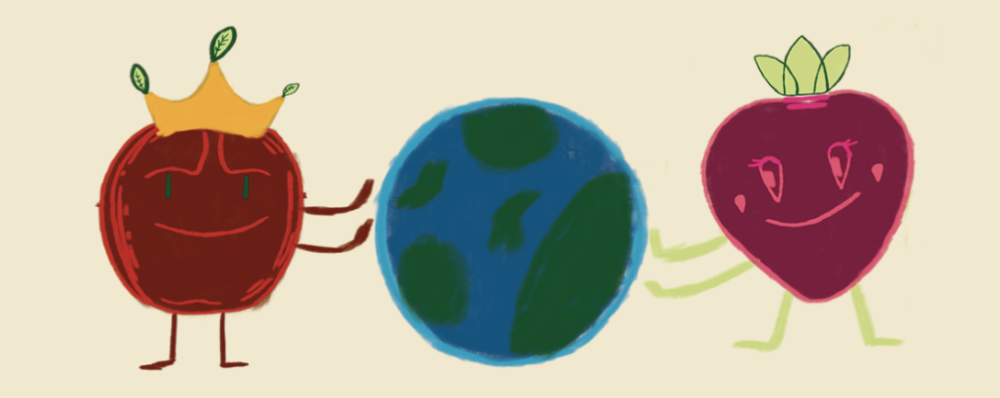
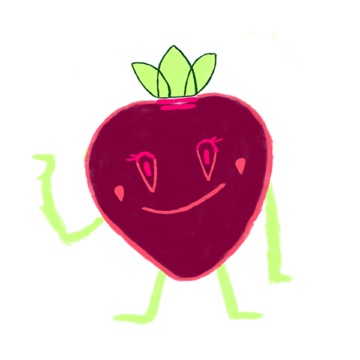

Waarom meer duurzaam?
 Ontmoet onze boerenDoor duurzamer te leven verminder je de uitstoot van broeikasgassen. Hierdoor blijft de grond schoner en gezonder. Om snel voedsel te verbouwen, worden vaak chemicalin en gifstoffen gebruikt. Dit vergiftigt niet alleen het voedsel, maar ook de bodem en de dieren die ermee in aanraking komen. In bewerkt voedsel en drinken zitten vaak meer vetten en suikers om het smakelijker te maken.
Houd er echter rekening mee dat gifstoffen zich ondergronds verspreiden, bijvoorbeeld via gras. Deze stoffen worden door dieren opgenomen, wat vaak leidt tot ziektes of stress bij hen.
Wat is het verschil tussen wel en niet duurzaam eten en drinken
Duurzaam
- Duurzame productie
- Duurzame consumptie
- Geen gebruik van gifstoffen
Niet duurzaam
- Ongelijke productie
- Snele consumptie
- Gebruik van gifstoffen